White space, the Sublime Text way
BPR-1107, design v2 — as accepted by the owner on 2026-09-25, with his two corrections. Every picture below is the real product drawing, captured offscreen from the review panes and the Appearance page as built; nothing is mocked. v1 is the page he reviewed.
What changed from v1 (attended session 70834742, decisions 5a19ba24 and 0eb6d682)
The owner accepted the drawing and the six choices, and wrote two notes:
I think I had inadventently put a space after the tab in my sublime example […] Just be sure tab renders as line not a line + dot, dot is space
"Under the selection" is weird phrasing, made me want to look at lines beneath the selection. Just call it selection.
- A tab is a line alone. v1's captures copied the reference picture, stray spaces included
(
\t\t 2 tabs.,\t 1 tab.), so each run of tabs ended in a dot. The painter was already right: one mark per character, a line for a tab, a dot for a space. The captures below use the owner's own text from his note, byte for byte (two trailing spaces are added to its first line so Trailing has something to draw), andqt_code_sample_painternow checks that exact text pixel by pixel. - The default is called Selection. The stored value is unchanged (ordinal 1, stable name
selection, appearance store version 8), so nothing is migrated. The preview's caption says "white space drawn in the selection".
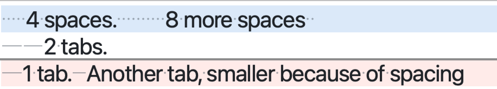
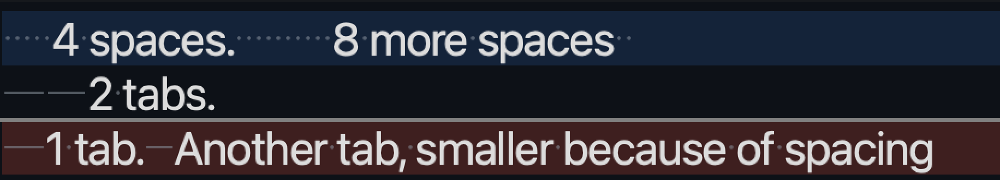
What the owner asked for (attended session cbd48b91, decision 6b7243c3)
Should follow the sublime text model with dots and lines and have settings to control white space. We don't need to support all their settings but at least easy and impactful ones.
The full note quotes Sublime Text's draw_white_space documentation; it is on the card.
1. The drawing, beside the owner's reference
A space is a small dot centred in its cell. A tab is a thin line from where it starts to its tab stop, so a tab
that begins partway to a stop is shorter ("Another tab, smaller because of spacing"). Both are drawn in the
code_line_number_text role at a faint alpha, the colour the old tab markers used; no new role.
The review panes, the Appearance preview and the theme tiles all draw through one shared painter.
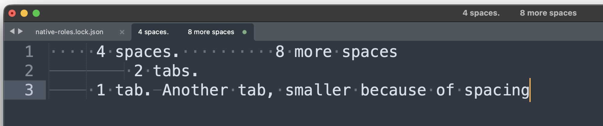
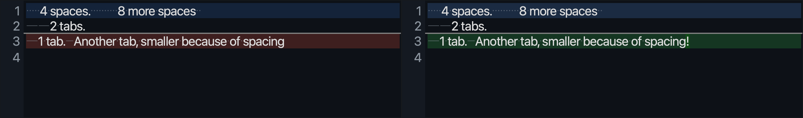
The four themes (All)
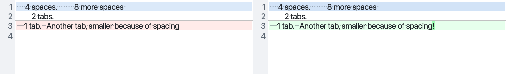
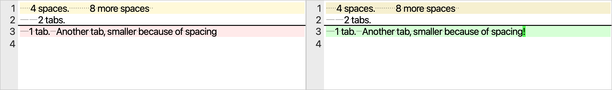
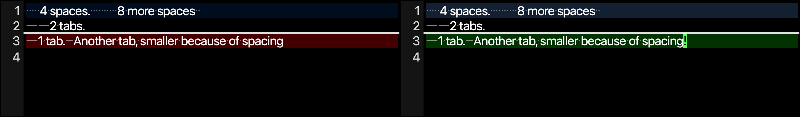
The offscreen test host resolves the code font to a proportional face, so letter widths differ from a real monospaced setup; the dots and lines are placed wherever the editor puts each character, so they follow whatever font is in effect.
2. The setting: when white space is drawn
One row on the Type card, directly beneath Tab width, in RFC-BPR-0034's row language: label, info glyph, control. It is typography, kept per profile in the appearance store (schema version 8, with a migration).
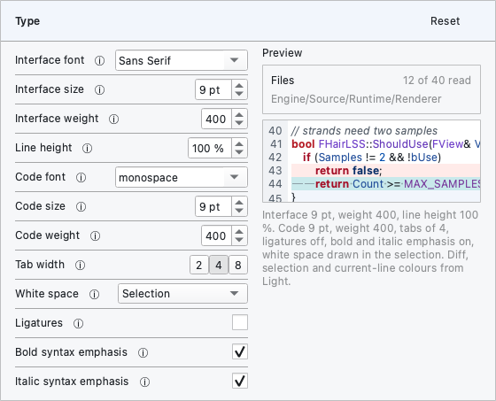
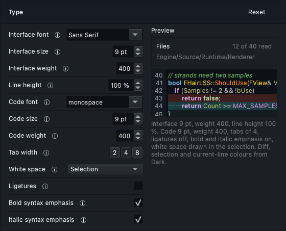
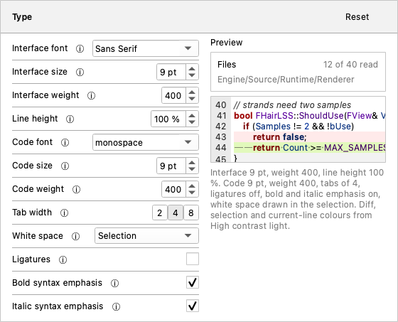
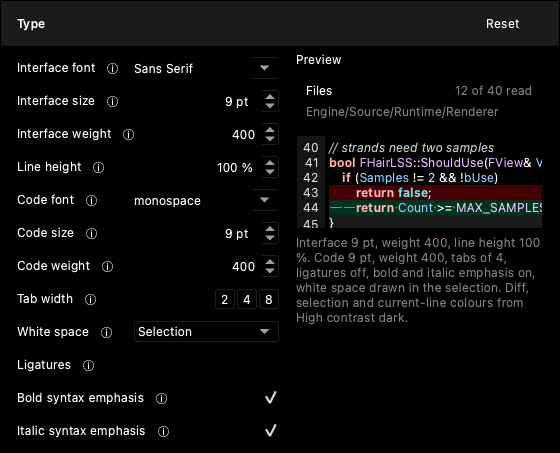
The six choices
| Choice | Sublime Text | Draws |
|---|---|---|
| None | [] | Nothing. |
| Selection default | ["selection"] (Sublime's default) | Every space and tab on the lines the selection washes, nothing elsewhere. |
| Leading | ["leading"] | Indentation: from the start of a line to its first other character. |
| Trailing | ["trailing"] | From a line's last other character to its end: the stray white space a review most often wants to see. |
| Leading and trailing | ["leading", "trailing"] | Both, and so a line of white space alone (Sublime's "isolated"). |
| All | ["all"] | Everything, including white space enclosed between words. |
Each choice, Light and Dark
The reader is on line 1, so Selection draws on line 1 of both sides.
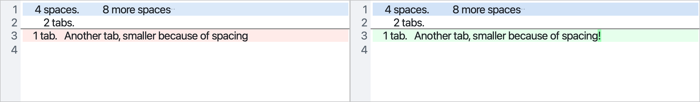
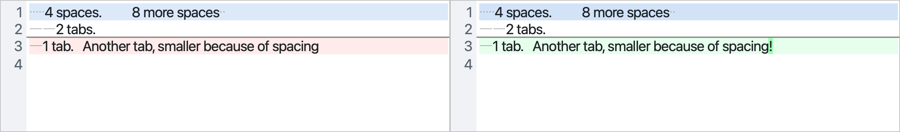
3. The default: Selection
It is Sublime Text's own default, which the owner pointed to. It keeps a review calm: nothing is drawn until the reader selects, and then every tab and space of what they selected shows, which is where the question "is that a tab or spaces?" is asked. A profile saved before this change takes the same default when its store is migrated. The alternative offered was Trailing, which would flag stray end-of-line white space in every diff without a gesture. The owner kept Selection.
4. What is left out, and why
- Combining choices (Sublime's list, e.g.
["all_tabs", "selection"]): one choice at a time keeps the row one line and legible. "Leading and trailing" is the one combination that earns its own entry. - Enclosed and isolated on their own: enclosed alone answers no review question All does not; isolated is already drawn by Leading, Trailing and Leading and trailing, because a line of white space alone is both.
- The
_tabs,_spacesand_nonerefinements: each would multiply the six choices by three for a small gain; add them later if the owner asks. - The
_mixedrefinements: they need an indentation style ("translate tabs to spaces"), which a review window reading someone else's code does not have. - Indentation guides (the faint vertical lines in the reference): a separate Sublime setting, not white space; not built here.
5. What the owner decided (2026-09-25)
- The drawing, a dot per space and a line to the stop per tab: accepted, provided a tab is a line alone.
- The six choices with Selection as the default: accepted, with the default renamed from "Under the selection".